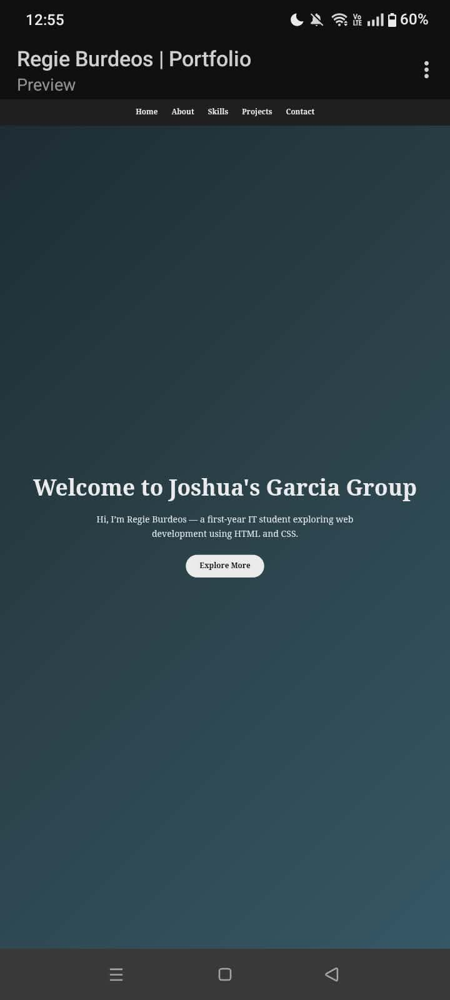

Personal Portfolio Website (ITE 10)

A personal portfolio website built with plain HTML and CSS, no frameworks or templates. It uses semantic HTML for structure, with a responsive layout built using Flexbox and Grid, a consistent color scheme and typography, and accessibility features like visible focus states and readable text contrast. JavaScript isn't included yet, but the current version covers everything required for the ITE 10 assignment.